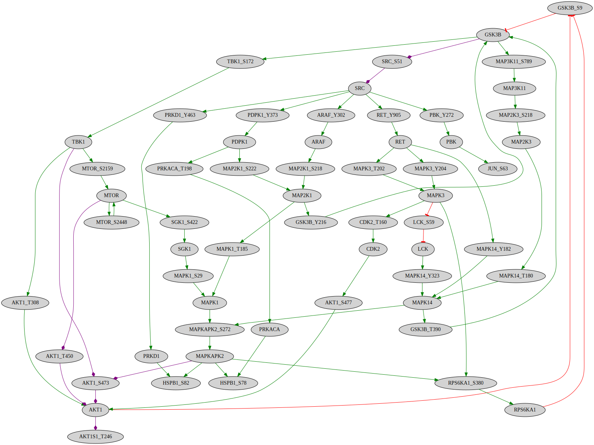

Build network based on kinase-phosphosite interactions
This notebook provides the code to create a network based on kinase-substrate interactions and the annotated effect of phosphorylation (based on PhosphositePlus) on the activity of the substrate.
[1]:
%%time
from neko.core.network import Network
from neko._visual.visualize_network import NetworkVisualizer
from neko.inputs import Universe, phosphosite
from neko._annotations.gene_ontology import Ontology
import omnipath as op
import pandas as pd
CPU times: user 3.53 s, sys: 835 ms, total: 4.37 s
Wall time: 4.28 s
1. Specify kinase-substrate interaction file and phosphosite effect annotation
In this example, both files we utilize are from PhosphositePlus.
2. Add interactions as a resource database
The process_psp_interactions function parses the provided files to create an interaction database in the Omnipath format.
[2]:
resources = phosphosite()
/home/mruscone/Desktop/github/Neko/test_env/lib/python3.12/site-packages/neko/inputs/_db/_misc.py:21: FutureWarning: Downcasting behavior in `replace` is deprecated and will be removed in a future version. To retain the old behavior, explicitly call `result.infer_objects(copy=False)`. To opt-in to the future behavior, set `pd.set_option('future.no_silent_downcasting', True)`
df[col] = df[col].replace(mappings)
/home/mruscone/Desktop/github/Neko/test_env/lib/python3.12/site-packages/neko/inputs/_db/_misc.py:21: FutureWarning: Downcasting behavior in `replace` is deprecated and will be removed in a future version. To retain the old behavior, explicitly call `result.infer_objects(copy=False)`. To opt-in to the future behavior, set `pd.set_option('future.no_silent_downcasting', True)`
df[col] = df[col].replace(mappings)
3. Define a set of phosphosites we are interested in
[3]:
genes = ['AKT1S1_T246', 'GSK3B_S9', 'AKT1_S473', 'HSPB1_S78', 'HSPB1_S82', 'MAPK14_T180', 'MAPK14_Y182', 'MAP2K1_S218', 'MAP2K1_S222', 'RPS6KA1_S380', 'MTOR_S2448', 'JUN_S63', 'MAPK3_T202', 'MAPK3_Y204']
4. Build network
[7]:
%%time
new_net1 = Network(genes, resources=resources.interactions)
CPU times: user 203 ms, sys: 2.08 ms, total: 205 ms
Wall time: 205 ms
Note
Neko is based on UniProt IDs. It is still possible to use databases with other IDs, but an error message will appear during the translation progress, as in the example below.
[8]:
%%time
new_net1.complete_connection(algorithm= 'bfs', maxlen=None, only_signed=True, connect_with_bias=True)
CPU times: user 1.09 s, sys: 368 μs, total: 1.09 s
Wall time: 1.09 s
[9]:
visualizer1 = NetworkVisualizer(new_net1, color_by='effect')
visualizer1.render()
